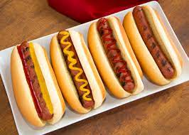

Hotdogs

Description
You can boil 'em, grill 'em, steam 'em, or roll 'em. Hell, if your really
desperate you can eat 'em cold and nobody will ever know your shame.
Regardless of how you intake them, on a bun or in mac 'n cheese, weiners will be there for you.
Ingredients
- Pack of weiners (Nathan's is best)
- buns
Directions
- fill the pot you piss in half full with water after you clean it
- bring that pee tinged water to a boil on the stove
- Crack open that package of weiners and drop them son's 'o bitches in the boiling water
- after boiling for 5-7 minutes remove the pot from the hot ass stove
- split the buns open on a plate
- using tongs (or your fingers if your a psycho) put the left over bits of pork and chicken inbetween the buns
- garnish with your favorite condiments and shove them weiners down your gullet and get back to work